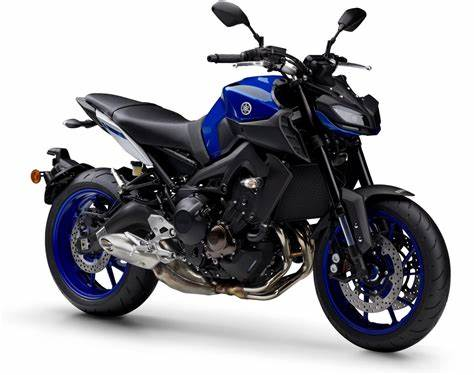

Yamaha YZ 250
La Yamaha YZ250 es una moto de carreras de motocross de dos tiempos fabricada por Yamaha.
Precio: $ 40.000.000 IVA incluido
Pulsar NS 200
La Pulsar NS200 FI tiene motor DTS-i de triple bujía, sistema fuel injection, transmisión de 6 velocidades, suspensión trasera mono-nitrox, refrigeración líquida y stop led.
Precio: $11.899.000
NKD 150

Su motor monocilíndrico de 4 tiempos y 150 cc genera una potencia de 13 HP.
Precio: $7.000.000
MT 09

La Yamaha MT-09 es un motocicleta estándar de motor en línea tricilíndrica de 847 cc. Tiene el nuevo motor tipo "desaxé", un marco de aleación de aluminio, y horquilla invertida
Precio: $69.900.000
Ducati Monster

Es una motocicleta naked, que se caracteriza por tener el motor descubierto y chasis trellis al descubierto también.
Precios desde $287,000.00 - Hasta $387,400.00
Ktm 250

El avanzado motor monocilíndrico de 4 tiempos, 4 válvulas, con refrigeración líquida y 248.8 cc, permite una potencia de 29.5 HP a 9000 rpm
Precio: $29.290.000
Dominar 250

Dominar 250. Con motor DTS-i, doble chispa, horquilla invertida, sistema de frenos ABS, Fuel Injection, suspensión monoshock nitrox, y mas.
Precio: $14,999,000.00
Kawasaki Ninja 1000

La Kawasaki Ninja 1000 SX es una moto deportiva, el motor de cuatro cilindros en línea de 1.043 cc ofrece 142 cv con 111 nm de par
Precio: $81,232,000